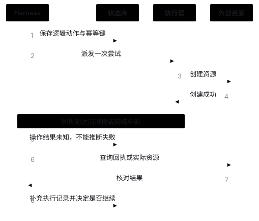
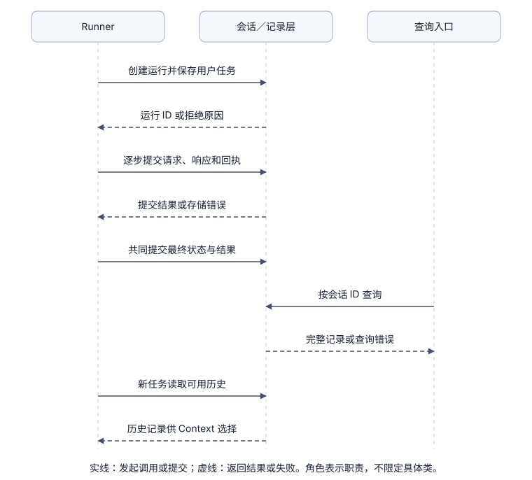

Session / State：管理会话与执行记录
1. 实现原理：区分执行进度、保存的记录和实际操作结果
生成报告时，程序可能已保存模型的写入调用，却还没执行工具；也可能文件已经创建，但回执尚未提交。两种情况看起来都“停在写入附近”，恢复动作却不同。
需要分别记录：下一步从哪里继续、哪些执行记录已保存、文件或外部系统实际发生了什么变化。 数据库事务通常只保证自身记录的原子性，不能顺带把本地文件或远程 API 也纳入同一事务。
State：中断后的记录查询与任务恢复
未来恢复协议示例；当前已有持久记录，但尚未实现图中的自动恢复与操作结果核对。

2. 与相关模块怎样交互
Runner 提交执行记录，记录层负责可靠保存和查询。一次运行需要带有固定 ID，消息还要关联到步骤和工具调用。写入成功的返回表示记录已提交；读取返回已保存的记录，存储错误必须返回调用方，不能以空历史替代失败。
例如读取 notes.txt 后退出程序：新的 Runner 取得同一会话已完成的历史；未来接入上下文管理后，再交给 Context Manager 选择本次输入。Context 的省略清单不应删除原始回执。用户也可以经入口查询全部记录；这条路径不触发模型请求或工具重放。
进度事件：记录执行走到了哪里
消息记录“说了什么、工具返回了什么”，请求记录“准备发给模型什么”，进度事件记录“何时走到了哪个节点”。把事件按顺序排列，就能查看任务从开始到结束的过程，定位缺少响应或回执的位置；通常再按任务 ID 和步号查具体请求与消息。
单独保存事件是一种实现选择：便于统一查询时间线，代价是多存一些重复信息；也可以从消息、请求和状态记录中整理执行过程。事件必须说明它确认的是哪个节点，不能把“准备请求”当成“远端已收到”，也不能把“工具返回”当成“工具执行成功”。下面第 8 节列出当前实现的事件种类。

对照当前代码：阶段 3A 详细展示了 函数与类的关系、请求前后的保存顺序和 SQLite 五张表的结构与关联。可以沿一次任务核对 Runner 何时调用记录层、何时请求模型。
记录层不能替 Tools 或 Policy 作保证。文件修改发生在执行器，授权发生在 Policy；SQLite 中的一次提交不能同时保证授权和文件操作成功。自动恢复还需核对动作是否派发、是否已生效、当前授权是否有效；仅有消息表不能回答所有问题。
3. 记录方案与恢复方案怎样分别选择
先分开两个问题：执行记录怎样组织和保存，以及中断后怎样继续执行。JSONL 文件、SQLite 或服务端数据库是存储载体；持久消息、检查点与事件重放是记录和恢复方式。选用 SQLite 并不自动实现下面的恢复机制。
本轮的基础方案：持久消息与运行状态
按会话和运行保存消息、本次请求的内容、结果与状态，便于查询和为新任务提供历史；进度事件用于定位执行边界。这比完整恢复协议更容易验证，代价是不能判断结果未知的操作是否应该重做。当前采用这一方案，用 SQLite 事务确保相关记录一起保存。
内存方案适合单次练习；持久文件容易检查但需处理部分写入与并发；SQLite 方便本地事务和关联查询；服务端数据库适合多进程或远程部署但增加运维。本项目阶段 0 保留内存基线，阶段 3 选择 SQLite。下列 B–D 是另需建设的恢复方向，尚未实现。
A. 仅内存状态
将消息、当前步骤和预算保存在进程对象中。它实现直接，适合一次性任务或可随时重做的只读操作；进程结束后无法继续，也不适合操作成本高、难以撤销的任务。
B. 状态快照加动作记录
快照保存当前工作状态；动作记录使用固定的逻辑调用 ID，保存待执行内容、每次执行尝试和实际结果。启动时读取最新快照，再判断动作是尚未派发、已确认，还是操作结果未知。
它适合从简单循环逐步增加恢复。代价是必须明确何时保存快照，以及动作如何记录、执行和确认结果；仅保存 step_index 然后执行后续步骤，无法判断中断前动作是否已经发生。
C. 事件日志加 Projection（根据事件重建状态）
实际执行记录按顺序追加，根据事件生成查询结果和本次输入；可用检查点减少每次重放的成本。它适合多个组件读取记录、详细审计和复杂的恢复需求。
代价是事件版本、重放规则、状态重建逻辑的升级和事件顺序管理。普通观测日志不一定包含恢复执行所需的完整记录。 只有明确保存时机、完整事件和重放规则，日志才足以支持执行恢复；阶段 0 的独立脚本只打印进度；阶段 3 保存运行事件与完整消息，但尚未实现事件重放或恢复协议。
D. 持久工作流运行时
由运行时保存节点、等待和重试状态，应用将动作放入明确任务或节点。它适合长时间等待、审批和跨服务协调，也会引入运行时约束与工作流版本兼容。
这种运行时减少部分调度代码，却不能自动确认任意外部 API 的效果。依然需要幂等键、查询回执或人工对账。
| 方案 | 恢复依赖什么 | 收益 | 主要代价 |
|---|---|---|---|
| 内存 | 原进程仍在 | 最少代码 | 退出即丢失 |
| 快照 + 动作记录 | 快照和动作状态 | 容易对应到已执行的步骤 | 提交和回执协议 |
| 事件 + 状态重建 | 完整事实和重放规则 | 审计、分支与多消费者 | 事件版本与状态重建逻辑维护 |
| 持久工作流 | 运行时节点与任务记录 | 等待、重试与调度 | 平台约束和工作流演进 |
4. 真实系统怎样保存与继续
pi，指定版本的源码与文档。 会话格式使用 JSONL 保存条目，通过记录 ID 和父记录 ID 表达分支关系。会话处理代码根据条目生成发给模型的消息，压缩记录可以改变发给模型的内容，同时保留原始记录结构。它说明“持久记录”和“本轮输入”可以独立，不说明分支切换能回滚对外部资源的实际修改。
LangGraph，官方文档。 持久化和短期状态以线程与检查点维护工作状态。中断说明特别提醒节点可能重新执行：中断之前的副作用可能再次运行。可借鉴的是明确记录等待状态，以及哪些操作可能被重复执行；恢复任务不等于还原原来的 Python 调用栈。
AgentScope Java，指定版本的官方文档。 Session Log 区分实际执行记录、checkpoint 和会话调度，操作结果未知的调用需先核对再续做。文档明确恢复不会恢复原线程、网络请求或工具内部进度。这里记录其公开设计，本次没有运行 Java 故障恢复实验。
5. 怎样给运行、动作和执行尝试分配 ID
建议在现有模型 call_id 之外增加逻辑动作 ID 和执行尝试 ID：
invocation_id 一个逻辑动作，重试时稳定
attempt_id 一次实际派发，每次尝试不同
run_id / step_id 所属执行位置
call_id 模型协议中的调用身份
tool_version 实际工具版本
arguments_hash 规范化参数摘要
status prepared / dispatched / succeeded / failed / unknown
receipt_ref 可查询的实际回执
幂等键绑定逻辑动作，而不是单次网络请求。模型再次提出相同参数，不一定是同一逻辑动作；参数哈希用于核对，不能单靠它判断两次请求是否属于同一操作。
6. 恢复怎样作决定
| 持久保存的执行记录 | 可以怎样继续 | 还要检查什么 |
|---|---|---|
| 已确认成功且保存结果 | 复用结果，不再次执行 | 结果是否仍适用于当前任务 |
| 尚未派发 | 重新检查后执行 | 权限、资源版本与工具版本 |
| 只读结果缺失 | 允许重新读取或重新观察 | 数据随时间变化是否影响当前任务 |
| 写动作已派发但无结果 | 标记 unknown，先核对实际结果 | 幂等键和外部回执 |
| 无幂等也无查询能力 | 保留未知，交给明确的核对流程 | 不能猜测成功或失败 |
恢复时也要检查旧记录是否适用于当前模型协议和 Context 策略。旧的授权可能已撤销，旧的产物可能已被修改，旧摘要可能对应另一个任务版本；恢复不是无条件信任快照中的所有内容。
7. 并发与版本为什么不能省略
同一会话多执行者竞争时，需要租约或锁和条件更新，避免两个 Worker 都认为自己有权继续。租约过期本身也不足以让旧 Worker 停止写入，重要后端还需要检查执行版本，或使用 fencing token（让存储端拒绝旧执行者写入的递增编号）。
事件和快照必须带 Schema 版本。升级后应验证旧记录能否读取并重建状态；无法解释的状态应拒绝自动执行。重放事件只用于重建状态，不应在普通查询时再次发送外部动作。
8. 本项目当前选择与未实现范围
截至阶段 3A：SQLite 持久消息与运行状态，附带进度事件。会话绑定工作目录，一个用户任务对应一个 Run，一次模型请求及其回执对应一个 Step；消息与相应事件一起提交，最终状态与结果一起提交。当前事件不是可以重建全部状态的独立事件源，也没有执行检查点。
正常完成 Run 的全部消息会成为新任务的历史；失败记录可查询，未结束的 Run 会阻止同一会话再开运行。单会话活动 Run 的检查和唯一索引用于拒绝同一会话的并发运行，没有实现租约接管或后台恢复。选择理由、保存时机和实验见阶段 3。
当前阶段 3A 的六种事件
Runner 在执行节点调用 SessionStore，由存储层把事件与相关记录一起提交到 events 表。一行包含 run_id（任务）、step（步号）、kind（类型）、data（补充信息），以及顺序号和记录时间。当前写入的种类如下：
| kind | 何时记录，表示什么 | step | data |
|---|---|---|---|
run_started | 新建任务，与 Run 和最初用户消息一起保存。 | 0 | {} |
model_requested | 调用模型前，与完整请求一起保存；表示准备请求。 | 本次请求步号 | {} |
model_responded | 模型返回后，与完整响应一起保存；拒答、截断响应也会记录。 | 本次请求步号 | {} |
tool_returned | 工具执行器返回后，与回执一起保存；回执可以是成功、权限拒绝或预期工具失败。 | 提出调用的步号 | {} |
run_completed | 取得最终回答，与 completed 状态、结果和结束时间一起保存。 | 0 | {} |
run_failed | Runner 捕获循环中的异常，与 failed 状态、错误和结束时间一起保存。 | 0 | 错误对象，含 code 和 message |
为什么 data 通常是空的？kind、run_id、step 已经说明发生了什么；请求、响应和工具回执分别保存在 steps、messages 中，最终结果在 runs 中。data 只补充信息，当前只有失败结束事件写入错误。比如请求超时会留下 run_started → model_requested → run_failed；强制结束进程则可能来不及保存结束事件。
当前通过 --show-session 的 runs[].events 查看事件；它们不进入模型上下文，也不触发重放。事件类型和含义是本项目的当前约定，不是所有 Agent 必须采用的标准。完整表结构和“读取 notes.txt → 追问”的事件记录见 阶段 3A 的 events 示例。
未实现：自动恢复、动作幂等协议、事件重放、检查点迁移和分布式调度。下列故障恢复练习属于阶段 5，不是持久存储自然附带的能力。
9. 后续练习：恢复前先核对操作结果
先给只读动作保存固定 ID，在待执行动作保存后、工具返回后和结果提交后分别中断程序。重新启动时检查已确认结果不重复执行、未派发动作可以继续，变化的文件明确记录为一次新的读取结果。
工具仍使用真实文件，任务仍由真实模型发起；在进程退出和记录保存等时刻人为中断程序，不替换模型。写动作在完整协议建立前不自动恢复。最后解释同一策略为什么不能直接用于创建订单或发送邮件。